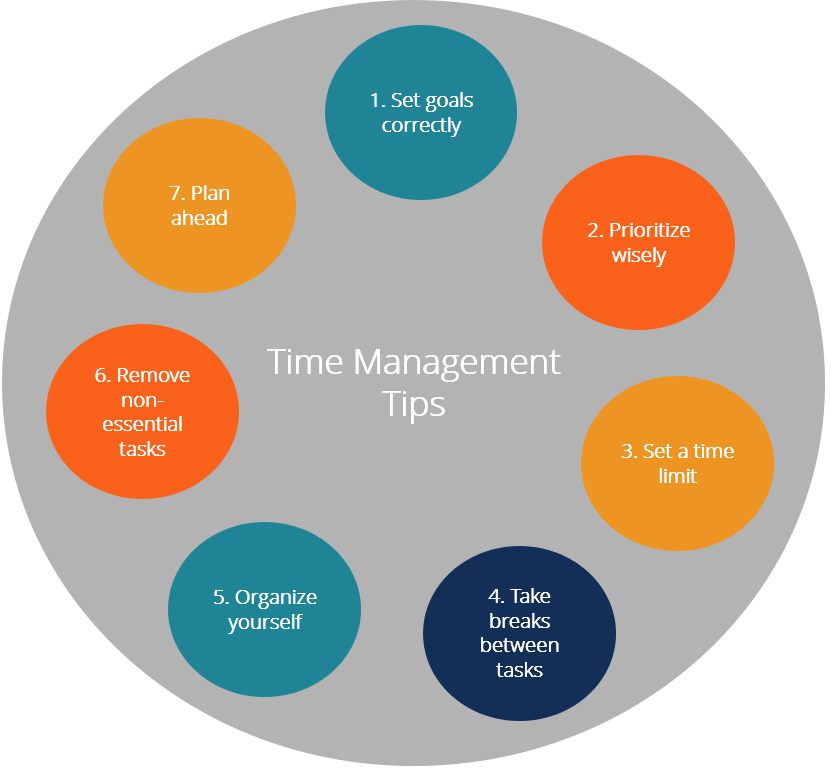

A Brief Guide to Time Management
The text and second image of this page were copied from this guide by The Corporate Financial Institute, while the following image is from this article by clockwise. To see a table comparing different time management applications, click here, and to see a converter of information units, click here.

Time management is the process of planning and controlling how much time to spend on specific activities. Good time management enables an individual to complete more in a shorter period of time, lowers stress, and leads to career success.
Benefits of Time Management
The ability to manage your time effectively is important. Good time management leads to improved efficiency and productivity, less stress, and more success in life. Here are some benefits of managing time effectively:
-
Stress relief
Making and following a task schedule reduces anxiety. As you check off items on your “to-do” list, you can see that you are making tangible progress. This helps you avoid feeling stressed out with worry about whether you’re getting things done. -
More time
Good time management gives you extra time to spend in your daily life. People who can time-manage effectively enjoy having more time to spend on hobbies or other personal pursuits. -
More opportunities
Managing time well leads to more opportunities and less time wasted on trivial activities. Good time management skills are key qualities that employers look for. The ability to prioritize and schedule work is extremely desirable for any organization.
-
Ability to realize goals
Individuals who practice good time management are able to better achieve goals and objectives, and do so in a shorter length of time.
List of Tips for Effective Time Management
After considering the benefits of time management, let’s look at some ways to manage time effectively:
-
Set goals correctly
Set goals that are achievable and measurable. Use the SMART method when setting goals. In essence, make sure the goals you set are Specific, Measurable, Attainable, Relevant, and Timely.
-
Prioritize wisely
Prioritize tasks based on importance and urgency. For example, look at your daily tasks and determine which are:
- Important and urgent: Do these tasks right away.
- Important but not urgent: Decide when to do these tasks.
- Urgent but not important: Delegate these tasks if possible.
- Not urgent and not important: Set these aside to do later.
-
Set a time limit to complete a task
Setting time constraints for completing tasks helps you be more focused and efficient. Making the small extra effort to decide on how much time you need to allot for each task can also help you recognize potential problems before they arise. That way you can make plans for dealing with them.
For example, assume you need to write up five reviews in time for a meeting. However, you realize that you’ll only be able to get four of them done in the time remaining before the meeting. If you become aware of this fact well in advance, you may be able to easily delegate writing up one of the reviews to someone else. However, if you hadn’t bothered to do a time check on your tasks beforehand, you might have ended up not realizing your time problem until just an hour before the meeting. At that point, it might be considerably more difficult to find someone to delegate one of the reviews to, and more difficult for them to fit the task into their day, too.
-
Take a break between tasks
When doing a lot of tasks without a break, it is harder to stay focused and motivated. Allow some downtime between tasks to clear your head and refresh yourself. Consider grabbing a brief nap, going for a short walk, or meditating.
-
Organize yourself
Utilize your calendar for more long-term time management. Write down the deadlines for projects, or for tasks that are part of completing the overall project. Think about which days might be best to dedicate to specific tasks. For example, you might need to plan a meeting to discuss cash flow on a day when you know the company CFO is available.
-
Remove non-essential tasks/activities
It is important to remove excess activities or tasks. Determine what is significant and what deserves your time. Removing non-essential tasks/activities frees up more of your time to be spent on genuinely important things.
-
Plan ahead
Make sure you start every day with a clear idea of what you need to do – what needs to get done THAT DAY. Consider making it a habit to, at the end of each workday, go ahead and write out your “to-do” list for the next workday. That way you can hit the ground running the next morning.
Implications of Poor Time Management
Let’s also consider the consequences of poor time management.
-
Poor workflow
The inability to plan ahead and stick to goals means poor efficiency. For example, if there are several important tasks to complete, an effective plan would be to complete related tasks together or sequentially. However, if you don’t plan ahead, you could end up having to jump back and forth, or backtrack, in doing your work. That translates to reduced efficiency and lower productivity.
-
Wasted time
Poor time management results in wasted time. For example, by talking to friends on social media while doing an assignment, you are distracting yourself and wasting time.
-
Loss of control
By not knowing what the next task is, you suffer from loss of control of your life. That can contribute to higher stress levels and anxiety.
-
Poor quality of work
Poor time management typically makes the quality of your work suffer. For example, having to rush to complete tasks at the last minute usually compromises quality.
-
Poor reputation
If clients or your employer cannot rely on you to complete tasks in a timely manner, their expectations and perceptions of you are adversely affected. If a client cannot rely on you to get something done on time, they will likely take their business elsewhere.
Related Readings
Thank you for reading CFI’s guide to time management. CFI is a global provider of financial modeling courses and financial analyst certification. To help you become a world-class financial analyst and advance your career, these additional free CFI resources will be helpful:
- Leadership Traits
- Employee Training and Development
- Leading By Example
- Personal Brand
- See all management & strategy resources